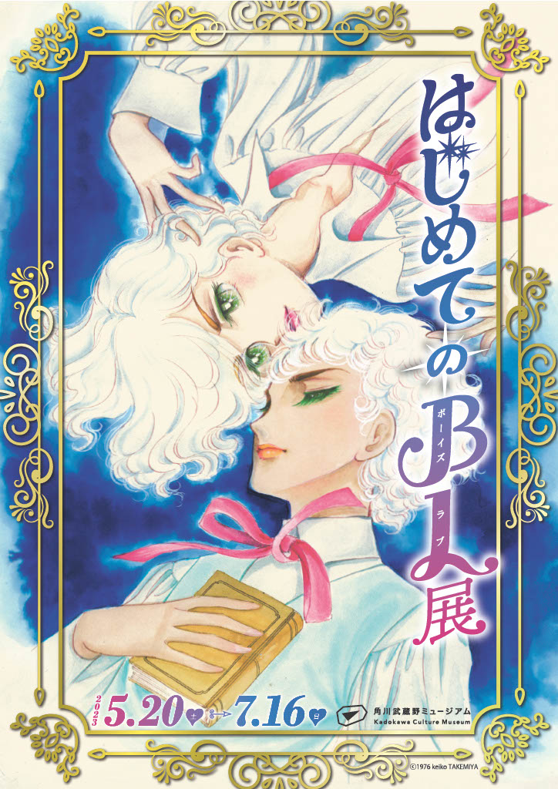
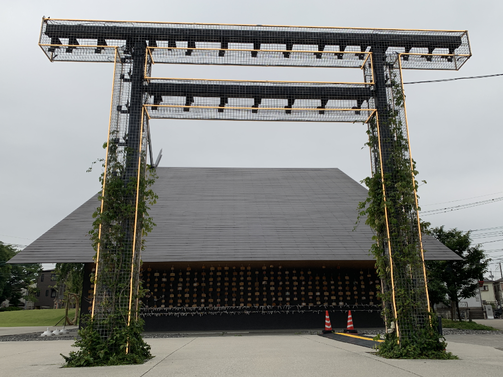
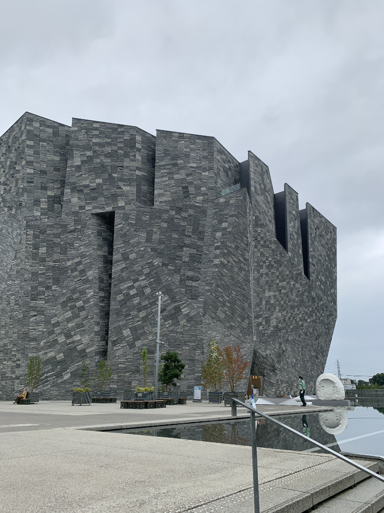
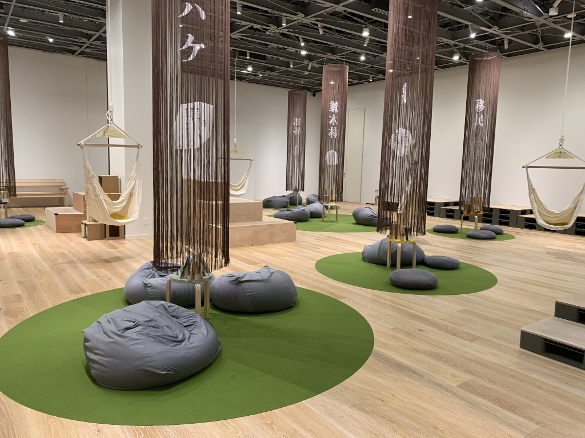
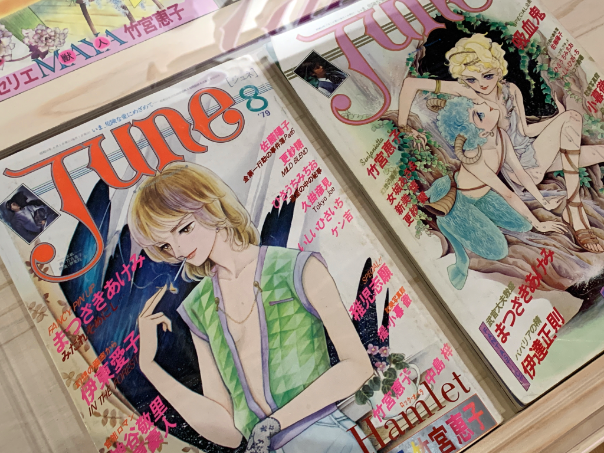
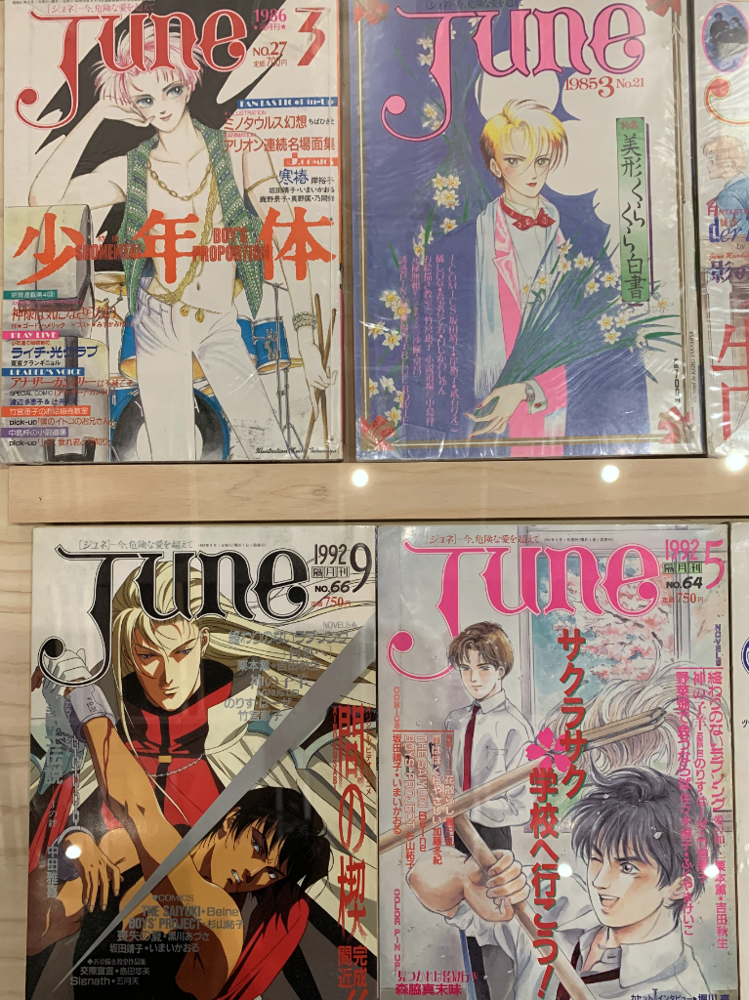
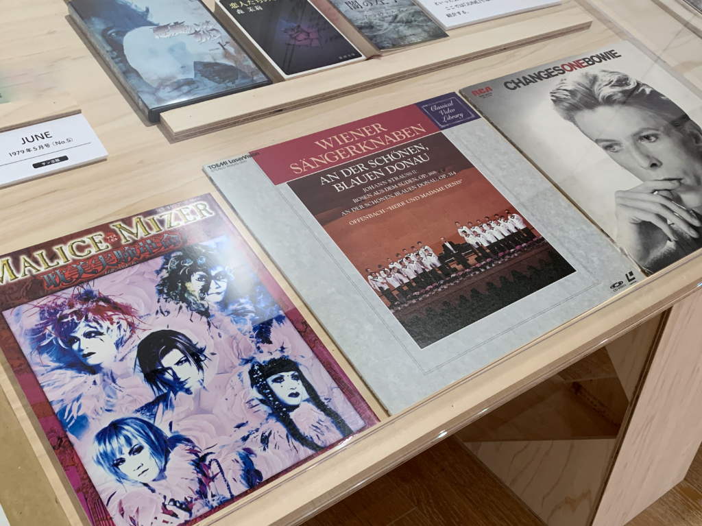
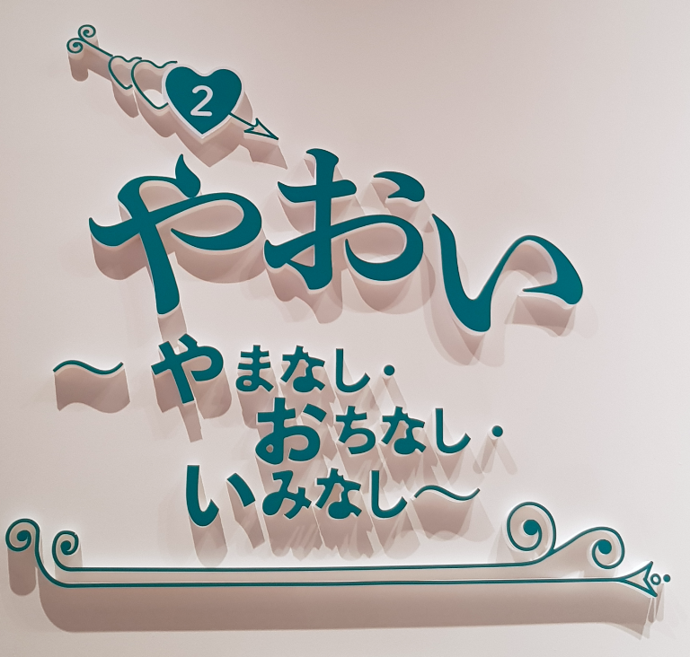
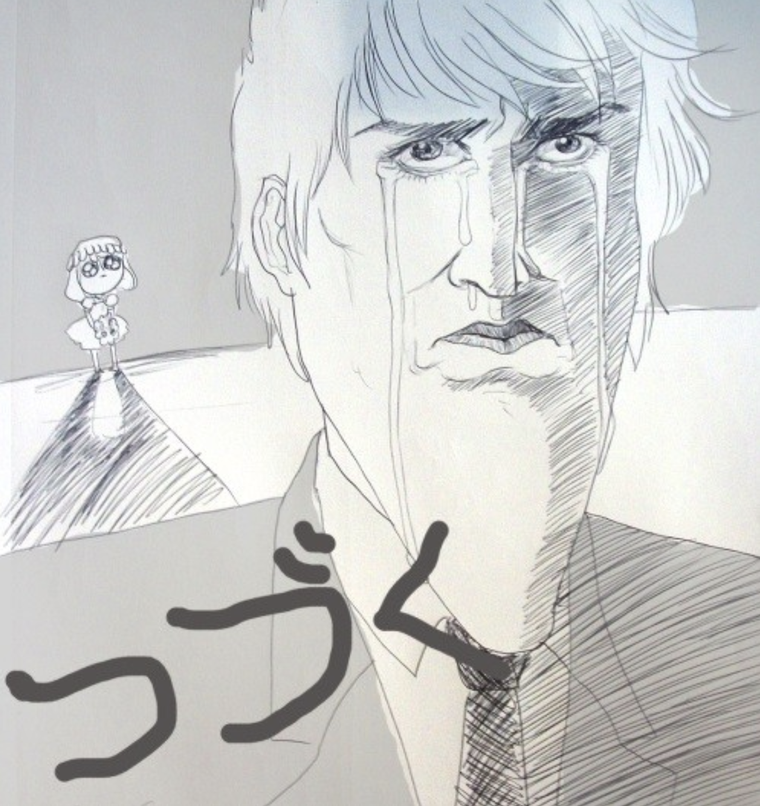

|
This is Part One of a two-part series. You can find Part Two here.
For a limited time from May 20th ~ July 16th, the Kadokawa Culture Museum ran a "First Boy's Love Exhibit" covering the roots and history of the Boy's Love (BL) genre in Japan and abroad. I had the good fortune to visit with my friend Ceren (@cerengunes).
Because this was such a unique experience and was only around for two months, I wanted to document my experience at the exhibition for fans in Japan and abroad. In addition to loosely translating the above article, I'll weave in some extra notes and context for the super-nerdy.

What is BL?
To fujoshi/fudanshi/fujin: you can skip this part.
"BL," or boy's love, a genre of fiction that depicts romantic relationships between male characters. Fans of the boy's love genre are known as fujoshi (腐女子), or "rotten woman," a play on the homophone 婦女子 for "married woman." Historically, it was a genre authored by straight women with the intended audience of straight women, but in modern times has captured the hearts of people of all identities and sexualities. Because of this, the terms fudanshi and fujin (rotten man/person) have grown in popularity within international BL communities.
Male/male romances have become more popularized in mainstream media, though BL as a genre (also known as yaoi) is wide—it stretches the range from chaste romance to titillating erotica and hardcore pornography. This wide range means that more hardcore BL has been stigmatized as "dangerous" or "impure" by people both outside and inside the fan community.
Arriving at the First Boy's Love Exhibit
When I arrived, the sun was starting to set, which made the Kadokawa Culture Museum and the surrounding modern architecture shine brilliantly. The buildings mix both modern and traditional aesthetic, and visitors can pray at a nearby shrine whose torii gate are lit up with LEDs.


Kadokawa is a large Japanese publisher and the culture museum is full of books published by them. Within Kadokawa is Kadokawa Ruby Bunko, a collection dedicated to BL works and authors, founded in 1992. In addition to the BL exhibit, the entrance fee gives visitors the opportunity to hang out in a quiet space with comfortable chairs and read books.

The BL exhibition sign is in full display in the lobby, and after snapping a few photos, we head upstairs. It's a small but very history-rich exhibit; visitors walk in a clockwise fashion following a timeline of BL from the 1960's to today.
The Original Fujoshi: Mari Mori
The first works we encounter are not illustrations; they are novels. Before the term BL had been coined, the author Mari Mori pioneered "aesthetic" male/male romances in her 1961 novel, The Lovers' Forest. According to an in-depth article by Tokyo Weekender:
"Mori's novels became popular among young women, many of whom were becoming disillusioned at the time with society's promises of marriage and heteronormative adulthood...she projected women's fantasies onto men's bodies. The Lovers' Forest offered a refuge from misogyny, a place for female readers to experiment with being agents of desire rather than its objects."[1]
According the the article, at the time women had been experiencing a growing dissatisfaction with the heterosexual norm of marriage and kids, and BL offered an escape for them. The Lovers' Forest's protagonist is Paulo, a Western boy with Oscar Wilde sensibilities; he exists to be beautiful and to feel pleasure, given to him by an older Guido.
Prior to this exhibit, I had read Japanese contemporary authors like Yukio Mishima but never heard of Mari Mori. Mori's work, and its Western influences and escapist themes—set the tone for the BL boom to come.
The Age of JUNE
Walking past Mori's novels were rows of magazines depicting fair-haired and ethereal pretty boys in an early and classic shojo style. JUNE magazine was published in 1987 and was the first serialized publication to cater entirely to BL. JUNE was monumental in cultivating the first BL manga artists who would later go on to lead the BL movement. The exhibition's leading image 『風と木の詩』 午睡のKISS」, or The Forest of the Wind and Trees: Kiss in Repose is by Keiko Takemiya who was a manga artist who was deeply involved in JUNE's production.


Glam Rock and Japanese Visual Kei
Around the 1970's, David Bowie and his androgynous alter ego Ziggy Stardust were skyrocketing to fame. JUNE's depiction of young men as "ethereal" tended to be more pastoral and fantasy-inspired; but as the trend of glam rock grew, so did alternate forms of androgyny in men. There was a display of various album covers that inspired or drew inspiration from the male androgyny of BL.

In particular, I was glad to see Malice Mizer included here—fans of the visual kei style in Japanese rock will know that they were a rock band that incorporated aspects of French romanticism, similar to that of early BL—as well as a gothic style. Gackt, who was a vocalist for Malice Mizer was a pop culture icon for androgyny and romantic gothic fashion.[2] I started by own BL journey through visual kei, and in particular, was drawn to darker BL and shojo manga like Kaori Yuki's Angel Sanctuary.
The Birth of the Term "Yaoi"

As we moved to the far wall, we were greeted with the definition of やおい, or yaoi, a term for more sexually explicit BL:
やまなし | no climax
おちなし | no plot
いみなし | no meaning
Fanworks then (and now) often have contrived plots to put two characters in sexually explicit situations. (i.e. "oh no, we booked a hotel and there's any one bed!")
The term "yaoi" is a reference to this kind of contrived plot.
The Boom of the 90's and the Yaoi Debates
When we rounded the corner, we saw a variety of books from various publishers who recruited either authors from JUNE magazine or doujinshi authors to publish BL/yaoi exclusive stories, such as Magazine Be x Boy.
To this day, the linkage between BL original series and fanworks is very strong—many artists who do original art also got their start as fanwork artists.

This was the beginning of the more interactive part of the exhibit, where viewers could leaf through some magazines and popular series like Junjou Romantica and Okane ga Nai!
This wasn't covered in the exhibit, but it is important context. Around the 90's boom was also when the "yaoi debates" began—specifically between LGBT+ activists and fans of yaoi. Masaki Satō, a gay activist and civil servant criticized yaoi in a feminist magazine as detached from the reality of actual gay men in Japan, painting them as objects of eroticism while real gay men suffered in silence. He compared women who enjoyed yaoi to "dirty old men" who enjoyed leering at women's bodies.[3]
Fujoshi responded to this critique in various ways; some agreeing that they were indeed "dirty old men" for objectifying gay men, while others defending yaoi as a healthier alternative to female objectification in heterosexual porn.
One of Satō's quotes in the debates made me think. He says, "Good manga must not 'incite an escape from reality' but 'make reality easier to live in.'" In the 90's, BL had rose to fame from women's "silly" fantasies to a threat to LGBT liberation. As someone who is an LGBTQ+ person and fujin myself, I interpreted this as a call from Satō for fujoshi not to use yaoi as escapism, but rather as a window into discovering and caring about the social issues of the LGBTQ+ community.
As we moved into the modern-day BL section, I wondered what Satō would think about the current state of LGBTQ+ rights in Japan.
This concludes Part One of Visiting the "First Boy's Love Exhibition" in Japan!
Continued in Part Two on tropes, parodies and modern BL.

Additional Resources
- Flights of Fancy: Mari Mori and the Origins of the Boys' Love Genre. Healy, Shane for Tokyo Weekender.
- Malice Mizer: Wikipedia.
- Discussing Depictions of Male Homosexuality in Japanese Girls' Comics, Gay Comics and Gay Pornography. Wim Lunsing for Intersections: Gender, History and Culture in the Asian Context.
About the Author
CJ is a designer and indie dev. They write as a hobby. If you like this article, why not say hello in an email or buy them a coffee to support their work?